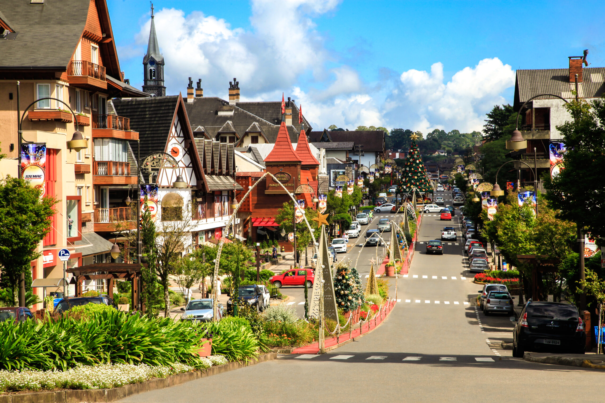

Rio de Janeiro (RJ)
O Rio de Janeiro é um dos destinos mais famosos do mundo, conhecido por sua natureza exuberante, cultura vibrante e povo acolhedor. A cidade é lar do icônico Cristo Redentor, eleito uma das Sete Maravilhas do Mundo Moderno, além do Pão de Açúcar, com vista panorâmica inesquecível. O Rio também é palco do maior carnaval do planeta, com os desfiles das escolas de samba na Sapucaí. Praias como Copacabana, Ipanema e Leblon são símbolos da cidade e locais perfeitos para relaxar, praticar esportes e curtir o pôr do sol ao som do samba e da bossa nova.
Gramado (RS)
Localizada na charmosa Serra Gaúcha, Gramado é um pedaço da Europa no Brasil. Com arquitetura alpina, clima ameno e ruas floridas, é um dos destinos mais visitados durante o inverno. A cidade é famosa pelo evento Natal Luz, que transforma as ruas em um espetáculo de luzes e shows. A gastronomia é outro ponto forte, com destaque para os fondues, chocolates artesanais e vinhos da região. Entre os principais pontos turísticos estão o Lago Negro, o Mini Mundo, a Rua Coberta e os museus temáticos como o Dreamland e o Museu de Cera.
Florianópolis (SC)

Conhecida como “Ilha da Magia”, Florianópolis reúne praias paradisíacas, natureza preservada e uma cultura rica, resultado da forte influência açoriana. A cidade possui mais de 40 praias para todos os gostos, desde a badalada Praia Mole até o refúgio tranquilo da Lagoinha do Leste. Além disso, trilhas ecológicas, dunas e lagoas encantam os aventureiros. A Lagoa da Conceição é o ponto mais animado da ilha, com bares, música ao vivo e culinária típica com frutos do mar. Floripa também é conhecida pelo surf, pelo artesanato e por seus festivais culturais.
Brasília (DF)
Brasília, a capital do Brasil, é um verdadeiro monumento à arquitetura moderna. Projetada por Lúcio Costa e Oscar Niemeyer, foi inaugurada em 1960 com o objetivo de interiorizar o poder político do país. Seu plano urbanístico inovador e seus edifícios impressionam pela originalidade. Entre os principais atrativos estão o Congresso Nacional, a Catedral Metropolitana, o Palácio da Alvorada, a Ponte JK e o Memorial JK. A cidade é cercada pelo Lago Paranoá, que oferece opções de lazer e contato com a natureza. Brasília também se destaca pela vida cultural, com teatros, museus e uma cena gastronômica em crescimento.